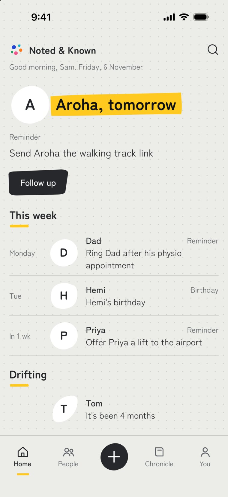
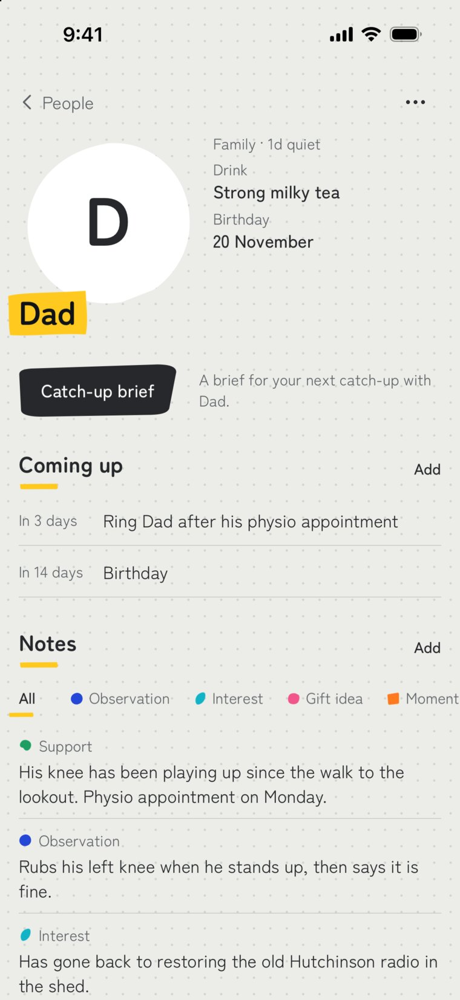
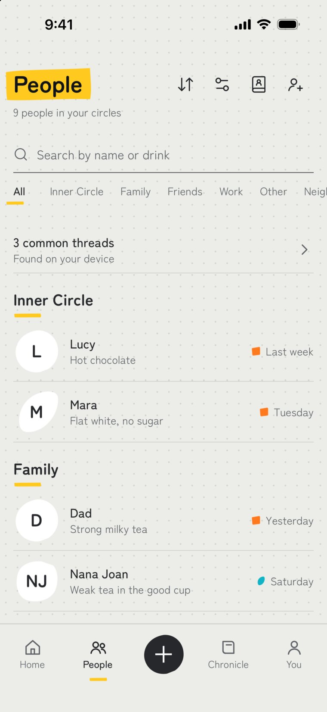
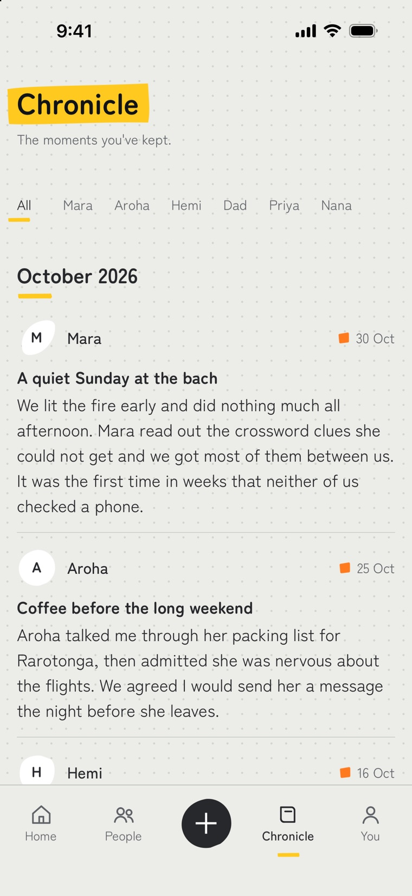
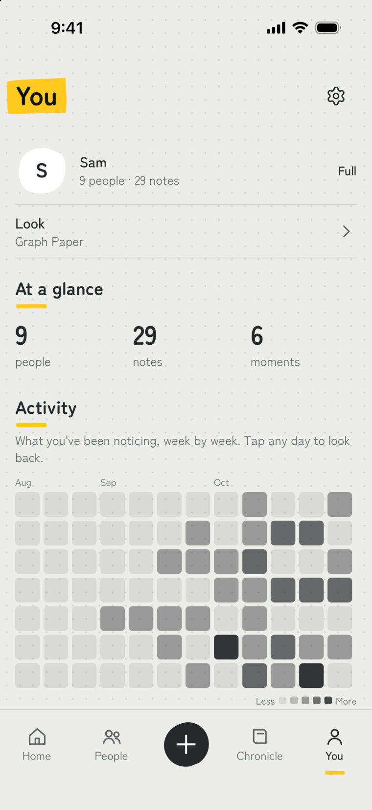
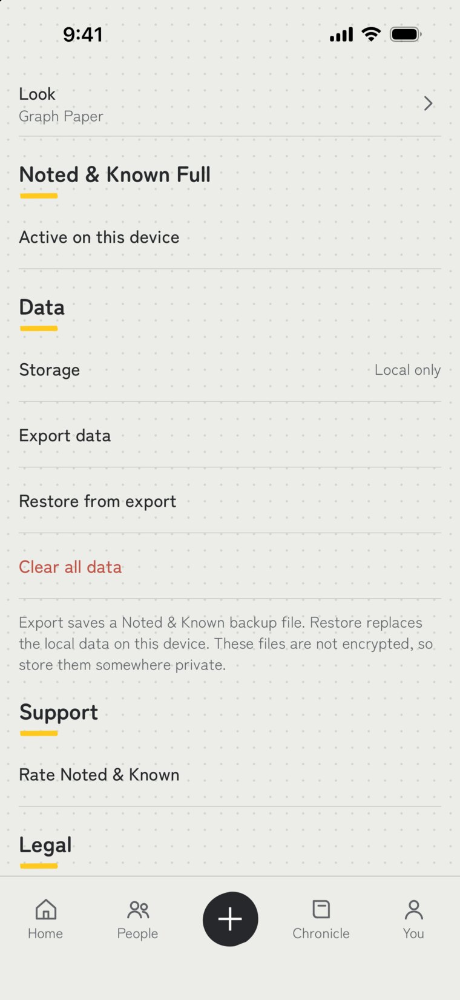

Case /05 Selected work← All work
Noted&Known
/ The brief
My own brief, this time. The things that make people feel known are small: the book a friend mentioned once, the interview they have on Thursday, how they take their coffee. Phones hold everything else about our lives, yet those details had no good home; the closest tools are CRMs, built for sales pipelines rather than friendships. So I designed one from scratch.
/ The approach
The design started with the behaviour rather than a feature list: what does caring attention look like, week to week? It settled into five kinds of note (observations, interests, gift ideas, moments, support), a catch-up brief before you see someone, and gentle reminders timed to the moments they serve. Trust decided the architecture. Everything stays on the device, with no account and no cloud copy, so writing something tender about a friend never feels like publishing it. Designed, prototyped and refined in-house, then built in React Native for iOS.
- Behaviour-first product design
- UX, UI & interaction
- React Native build for iOS
- Store listings & launch site






/ What it does
Each person gets a page for the details you’d otherwise lose, with a catch-up brief before you next see them and reminders timed to the moment. The Chronicle keeps a dated record of what you noticed, in your own words. The app can lock behind Face ID or your passcode, everything can leave with you as an export, and the free tier covers eight people with one flat unlock beyond that; there is no subscription.
/ Why it matters
Client work usually starts with a message. This one started with a human behaviour, and every decision had to serve it: pricing that doesn’t tax friendship, privacy that makes honesty safe, a You screen that reads as a mirror rather than a scoreboard. It’s the clearest proof I can offer that the same process behind the websites can hold a deeply human problem all the way from first sketch to the App Store.
/ The outcome
- Shipped
- Built for iOS, with its own store listing and website
- Private by build
- On-device data, biometric lock, export in your hands
- Whole product
- Behaviour research to store listing, one desk end to end
“Built because I kept forgetting the small details too.”